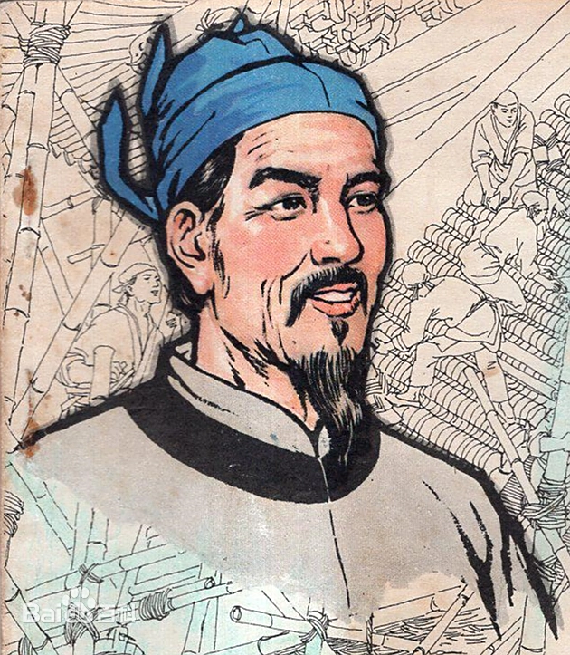

喻皓是北宋著名匠师，主要见于《梦溪笔谈》等文献记载。现存可考信息有限，但可以确认其在木构工程技术与结构判断方面声誉很高。本文聚焦桥梁、民居与官府建筑三类世俗建筑实践，强调“可考事实 + 合理推断”的边界，不涉及任何宗教建筑信息。

喻皓活动于北宋城市建设高频时期。城镇桥路、官署与居住建筑的木构需求持续增长，为匠师技术发挥提供了现实场景。
沈括在《梦溪笔谈》中记录了喻皓的工程见解，反映其在结构稳定与构造处理方面具有较高专业权威。
在宋代工程分工与工匠流动背景下，优秀匠师经验往往通过师徒和工地实践扩散，喻皓声誉应置于这一制度语境理解。
后世建筑史著作常将喻皓作为宋代匠师技术传统的代表人物，重点在结构经验与工程方法，而非某单体建筑名录。
本导图围绕“传为喻皓所撰《木经》”组织，仅采用可验证信息：该书在后世文献中有记载、正文已佚、影响主要通过间接引述和制度传统被讨论。每个节点标注证据等级，避免将推测写成定论。
传为喻皓所撰
宋代木作经验文献
《梦溪笔谈》对喻皓及其技术经验有记述，后世据此确认《木经》曾在知识谱系中被引用。
目前没有完整《木经》传本，学界讨论主要依赖间接文献和建筑制度史比较研究。
结合宋代营造语境，研究通常认为其与构件处理、结构经验、施工判断相关。
学界常将《木经》置于宋代木作知识传统中，与《营造法式》作比较，但不存在可直接逐条对照的全文证据。
《木经》虽佚，却成为讨论“工匠经验如何文本化”的关键案例，凸显技术知识传承问题。
在古建修缮与木构教育中，《木经》常作为历史参照议题，提醒研究者重视文献缺失与证据边界。
《梦溪笔谈》提供了关于喻皓技术判断的关键证据，说明其在工程结构问题上的专业地位。
基于北宋城市营建需求与工匠分工机制，可合理推断喻皓技术经验与桥梁、交通节点类工程语境相关。
宋代工程制度强调效率与可维护性。喻皓的技术声誉可被理解为这一制度导向下的实践体现，但不作单体建筑绝对归属。
| 维度 | 影响 | 说明 |
|---|---|---|
| 桥梁工程观 | 突出结构稳定与节点处理的优先级。 | 强调“先结构、后形态”的工程逻辑，符合宋代实用理性特征。 |
| 居住营造观 | 重视维护成本与构件替换便利。 | 为高密度城市中的民居持续更新提供可执行路径。 |
| 官署建筑观 | 兼顾秩序表达与功能效率。 | 反映宋代官府建筑从制度需求到施工实现的完整链条。 |
| 匠师方法论 | 把经验判断转化为可传授的工程知识。 | 对今天古建修缮、木构检测与工程教育仍有借鉴意义。 |
在证据有限的前提下，喻皓最可靠的历史形象是“技术判断型匠师”。当我们把视角放在桥梁、民居和官府建筑，就能更清楚看到其价值不在传奇叙事，而在结构理性、施工可行性与长期维护思维。
这类方法论恰好回应了今天的工程现实：面对复杂城市环境，建筑不只要“建得成”，还要“用得久、修得起、管得住”。喻皓的意义正在于此。